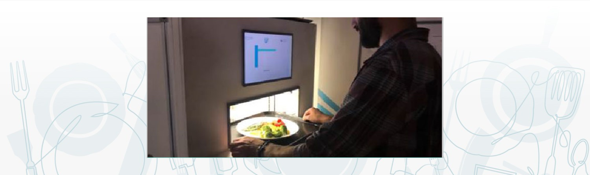
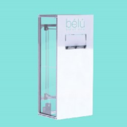

Bélú
CO-FOUNDER OF A STARTUP THAT DEVELOPED FROM A MULTINATIONAL MASTERS DESIGN PROJECT
One of eight students selected to take part in an international product design course, with the opportunity to work with a multidisciplinary team, split between Ireland and Italy, on a broad project brief set to us by an industry sponsor. Our sponsor, FoodCloud gave us the task of finding an innovative way to reduce food waste in the hospitality and food service sector.
Problem Area
Over one ⅓ of all food produced worldwide is wasted
The hospitality and food services sector being one of the biggest contributors. If food waste was a country it would be the largest green house gas emitter in the world, after China and the USA. It’s not just the food that is being wasted, it is also wasting all of the time, money, water, labour and transport costs that it took to get the food from a farm to your plate.
Solution
The aim was is to stop food waste at the source
Before it is ordered, cooked or even grown by capturing, categorizing and quantifying the food waste in restaurants. This information is gathered using computer vision, and relayed this information to managers through an intuitive UI allowing them to have better control over their inventory, save money and subsequently reduce their impact on the environment.
Design Devlopment
Over an initial 9 month design cycle both the Irish and Italian teams engaged with stakeholders to develop numerous prototypes. First identified key stakeholder groups and built empathy maps and personas. This allowed us to better understand our problem space and single out particular points of friction that our users have when dealing with said problem. We then built prototypes to test critical functions with our users and used their feedback and experiences to refine our design. This input from the users coupled with technical research and benchmarking reviews of existing technologies and patents allowed us to converge on a solution to the problem that fit our end users'needs. Our first prototype had the functionailty to both provide buisnesses with useful data and the means to convey that data in a meaningful way. The physical unit was also designed to be as easy to use as possible through ergonomic mechanical design and automation.
Our second design cycle began after receiving funding from the Launchbox Student Accelerator Program. This marked a shift in our design focus as now we not only had to think about how to fit our product to our users needs but we also had to make the idea financially viable. During this time we pitched to multiple investors and startup funds and focussed on honing our value proposition for our product. Coming from a Engineering background this was an eye opening experience and we quickly had to learn to balance the commercial side of things with our need to drive the technical development of our product forward. During our time in LaunchBox and after we refined our prototype design, developed an adaptable pitch deck while working on our business plan and developing a logo. The product was showcased at CES 2020 in Las Vegas .


Reflections
This project was a great test of both my technical and project maangaemtn skills. It gave me experience working in fast paced, deadline driven design cycles as well as working as part of a multi-disciplinary, international team. The startup is still running under the name .